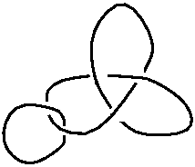
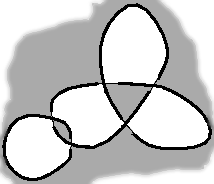
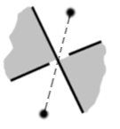
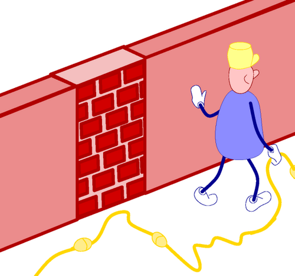
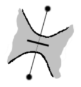
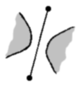

Suppose you find a nice knot like that one (okay, I could have done better... that’s only an example for God’s sake!):

You may want to reproduce it or make it fit to your needs. The best way to achieve that is by extracting its underlying graph. To do that, you have to color the regions of your knot with white and black, like a chequerboard. You notice that, forgetting the over/under pattern, your knot creates regions. There is a special region, the exterior of the knot, which is unbounded. Color it in black. Then, at each crossing, color the region opposite also in black:
You end up with this chequerboard pattern: 
Now you build your graph, defining its vertices and the edges connecting them. Put a vertex in each white zone, and above each crossing, draw an edge between the two neighbouring white zones, connecting the two vertices associated to them, with one black zone on each side:
Once you’ve got your graph, you have to compare each crossing with the two guides, the plain and the dashed one, to decide what type of crossing it is:
| or |  |
You have to realize what are the effects of walls on the graph because the graph you extract may well be awfull at first but with the aid of a few walls here and there can be seen as snapped onto an easy grid. As you can see in the following example, closing a door amounts to identifying the two end points while slashing an edge is equivalent to simply discarding that edge:

{kind=link}
| Don’t hesitate | to add "useless" new edges | that you will slash or close |
|  | or |  |
Now let’s build a bigger knot with the aid of encapsulation.
{kind=link}
{kind=link}